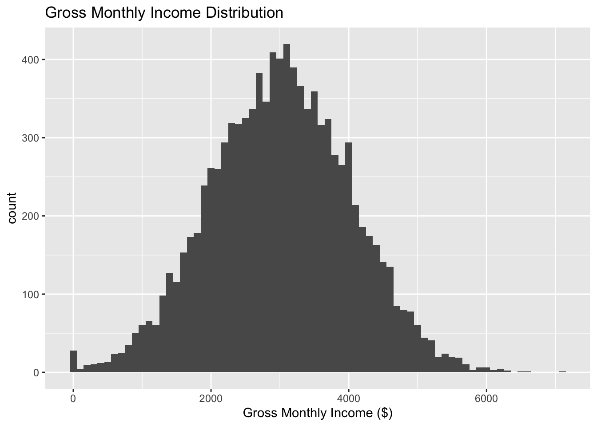
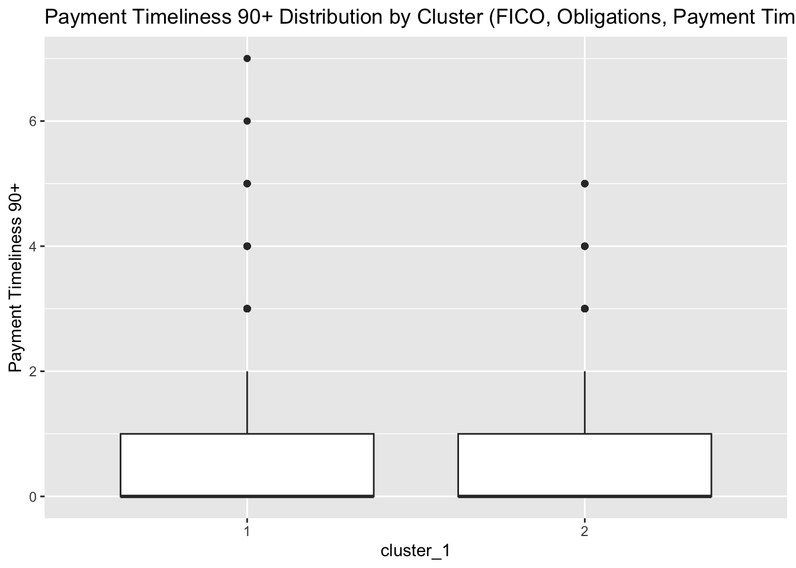
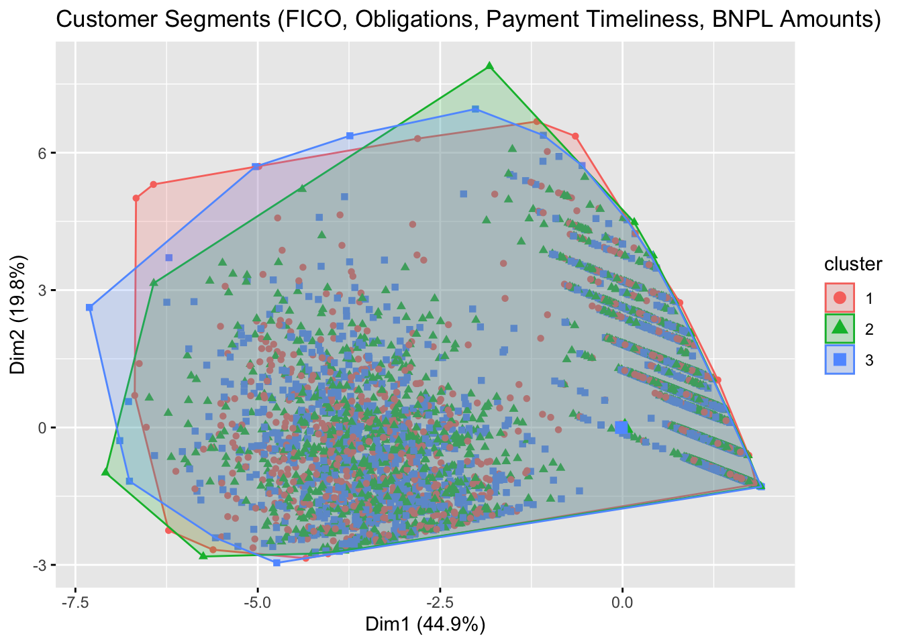
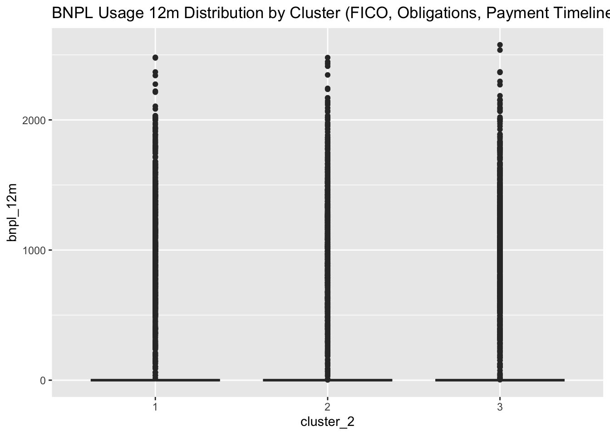

# Load necessary libraries
library(tidyverse)── Attaching core tidyverse packages ──────────────────────── tidyverse 2.0.0 ──
✔ dplyr 1.1.4 ✔ readr 2.1.5
✔ forcats 1.0.0 ✔ stringr 1.5.1
✔ ggplot2 3.5.1 ✔ tibble 3.2.1
✔ lubridate 1.9.3 ✔ tidyr 1.3.1
✔ purrr 1.0.2
── Conflicts ────────────────────────────────────────── tidyverse_conflicts() ──
✖ dplyr::filter() masks stats::filter()
✖ dplyr::lag() masks stats::lag()
ℹ Use the conflicted package (<http://conflicted.r-lib.org/>) to force all conflicts to become errorslibrary(tidymodels)── Attaching packages ────────────────────────────────────── tidymodels 1.2.0 ──
✔ broom 1.0.6 ✔ rsample 1.2.1
✔ dials 1.2.1 ✔ tune 1.2.1
✔ infer 1.0.7 ✔ workflows 1.1.4
✔ modeldata 1.4.0 ✔ workflowsets 1.1.0
✔ parsnip 1.2.1 ✔ yardstick 1.3.1
✔ recipes 1.0.10
── Conflicts ───────────────────────────────────────── tidymodels_conflicts() ──
✖ scales::discard() masks purrr::discard()
✖ dplyr::filter() masks stats::filter()
✖ recipes::fixed() masks stringr::fixed()
✖ dplyr::lag() masks stats::lag()
✖ yardstick::spec() masks readr::spec()
✖ recipes::step() masks stats::step()
• Use tidymodels_prefer() to resolve common conflicts.library(here)
library(cluster) # For clustering
library(factoextra) # For visualizing clustersWelcome! Want to learn more? See two factoextra-related books at https://goo.gl/ve3WBa# Load the data
data_path <- here("starter-analysis-exercise", "data", "raw-data", "synthetic_financial_data_recreated.csv")
df <- read_csv(data_path)Rows: 10000 Columns: 19
── Column specification ────────────────────────────────────────────────────────
Delimiter: ","
chr (1): Employment Status
dbl (18): Customer ID, Customer Tenure (years), Deposit Balance ($), Gross M...
ℹ Use `spec()` to retrieve the full column specification for this data.
ℹ Specify the column types or set `show_col_types = FALSE` to quiet this message.# Summary statistics
summary_stats <- df %>%
summarize(
avg_fico = mean(`FICO Score`, na.rm = TRUE),
avg_income = mean(`Gross Monthly Income ($)`, na.rm = TRUE),
avg_obligations = mean(`Current Credit Obligations ($)`, na.rm = TRUE)
)
print(summary_stats)# A tibble: 1 × 3
avg_fico avg_income avg_obligations
<dbl> <dbl> <dbl>
1 669. 3012. 11096.# Create histograms for FICO Score, Current Credit Obligations, and Gross Monthly Income
fico_hist <- ggplot(df, aes(x = `FICO Score`)) +
geom_histogram(binwidth = 10) +
ggtitle("FICO Score Distribution")
income_hist <- ggplot(df, aes(x = `Gross Monthly Income ($)`)) +
geom_histogram(binwidth = 100) +
ggtitle("Gross Monthly Income Distribution")
obligations_hist <- ggplot(df, aes(x = `Current Credit Obligations ($)`)) +
geom_histogram(binwidth = 500) +
ggtitle("Current Credit Obligations Distribution")
# Display histograms
print(fico_hist)print(income_hist)
print(obligations_hist)
# Rename columns to simpler names
df_clean <- df %>%
rename(
fico_score = `FICO Score`,
monthly_income = `Gross Monthly Income ($)`,
credit_obligations = `Current Credit Obligations ($)`,
debt_write_off = `Debt Write-off`,
bnpl_3m = `BNPL Amount 3m ($)`,
bnpl_6m = `BNPL Amount 6m ($)`,
bnpl_9m = `BNPL Amount 9m ($)`,
bnpl_12m = `BNPL Amount 12m ($)`
)
# Ensure the dependent variable is a factor
df_clean <- df_clean %>%
mutate(debt_write_off = factor(debt_write_off, levels = c(0, 1)))
# Check the structure of df_clean
str(df_clean)tibble [10,000 × 19] (S3: tbl_df/tbl/data.frame)
$ Customer ID : num [1:10000] 1 2 3 4 5 6 7 8 9 10 ...
$ Customer Tenure (years): num [1:10000] 8 9 4 7 6 5 6 3 6 6 ...
$ Deposit Balance ($) : num [1:10000] 5142 6941 5620 4721 4347 ...
$ monthly_income : num [1:10000] 1980 2246 1774 1983 4722 ...
$ bnpl_3m : num [1:10000] 0 0 0 0 0 ...
$ bnpl_6m : num [1:10000] 259 0 0 0 0 ...
$ bnpl_9m : num [1:10000] 699 0 0 0 0 ...
$ bnpl_12m : num [1:10000] 804 0 0 0 0 ...
$ Overdraft History : num [1:10000] 0 0 0 0 0 0 0 2 1 0 ...
$ fico_score : num [1:10000] 596 673 725 673 633 ...
$ credit_obligations : num [1:10000] 24398 15398 20338 1365 9950 ...
$ Payment Timeliness 30+ : num [1:10000] 2 0 0 3 1 2 0 0 2 0 ...
$ Payment Timeliness 60+ : num [1:10000] 1 0 0 1 1 1 0 0 1 0 ...
$ Payment Timeliness 90+ : num [1:10000] 0 0 0 0 0 1 0 0 1 0 ...
$ debt_write_off : Factor w/ 2 levels "0","1": 1 1 1 1 1 2 1 1 2 1 ...
$ Credit Inquiries : num [1:10000] 0 0 1 0 0 0 0 1 1 1 ...
$ Years Since Bankruptcy : num [1:10000] NA NA NA NA NA 5 NA NA NA 6 ...
$ Employment Status : chr [1:10000] "Employed" "Student" "Employed" "Retired" ...
$ Open Credit Accounts : num [1:10000] 9 7 10 1 5 1 1 1 1 5 ...# Analysis 1: Clustering with FICO score, current credit obligations, and payment timeliness
# Select relevant columns for clustering
df_clustering_1 <- df_clean %>%
select(fico_score, credit_obligations, `Payment Timeliness 30+`, `Payment Timeliness 60+`, `Payment Timeliness 90+`)
# Determine the optimal number of clusters using the elbow method
set.seed(123)
fviz_nbclust(df_clustering_1, kmeans, method = "wss")# Apply K-means clustering with the chosen number of clusters (2)
set.seed(123)
kmeans_result_1 <- kmeans(df_clustering_1, centers = 2, nstart = 25)
# Add the cluster assignments to the original data
df_clean$cluster_1 <- as.factor(kmeans_result_1$cluster)
# Visualize the clusters
fviz_cluster(kmeans_result_1, data = df_clustering_1, geom = "point") +
ggtitle("Customer Segments (FICO, Obligations, Payment Timeliness)")# Print cluster centroids
print(kmeans_result_1$centers) fico_score credit_obligations Payment Timeliness 30+ Payment Timeliness 60+
1 670.3551 16604.62 0.9857830 0.4915325
2 668.3943 6045.05 0.9917577 0.4941537
Payment Timeliness 90+
1 0.3771691
2 0.3661108# Compute summary statistics for each cluster
cluster_summary_1 <- df_clean %>%
group_by(cluster_1) %>%
summarize(
avg_fico = mean(fico_score),
avg_obligations = mean(credit_obligations),
avg_payment_30 = mean(`Payment Timeliness 30+`),
avg_payment_60 = mean(`Payment Timeliness 60+`),
avg_payment_90 = mean(`Payment Timeliness 90+`),
count = n()
)
print(cluster_summary_1)# A tibble: 2 × 7
cluster_1 avg_fico avg_obligations avg_payment_30 avg_payment_60
<fct> <dbl> <dbl> <dbl> <dbl>
1 1 670. 16605. 0.986 0.492
2 2 668. 6045. 0.992 0.494
# ℹ 2 more variables: avg_payment_90 <dbl>, count <int># Boxplots for FICO Score by cluster
ggplot(df_clean, aes(x = cluster_1, y = fico_score)) +
geom_boxplot() +
ggtitle("FICO Score Distribution by Cluster (FICO, Obligations, Payment Timeliness)")# Boxplots for Current Credit Obligations by cluster
ggplot(df_clean, aes(x = cluster_1, y = credit_obligations)) +
geom_boxplot() +
ggtitle("Credit Obligations Distribution by Cluster (FICO, Obligations, Payment Timeliness)")# Boxplots for Payment Timeliness 30+ by cluster
ggplot(df_clean, aes(x = cluster_1, y = `Payment Timeliness 30+`)) +
geom_boxplot() +
ggtitle("Payment Timeliness 30+ Distribution by Cluster (FICO, Obligations, Payment Timeliness)")# Boxplots for Payment Timeliness 60+ by cluster
ggplot(df_clean, aes(x = cluster_1, y = `Payment Timeliness 60+`)) +
geom_boxplot() +
ggtitle("Payment Timeliness 60+ Distribution by Cluster (FICO, Obligations, Payment Timeliness)")# Boxplots for Payment Timeliness 90+ by cluster
ggplot(df_clean, aes(x = cluster_1, y = `Payment Timeliness 90+`)) +
geom_boxplot() +
ggtitle("Payment Timeliness 90+ Distribution by Cluster (FICO, Obligations, Payment Timeliness)")
# Cluster Interpretation
cluster_summary_1 %>%
mutate(
interpretation = case_when(
cluster_1 == 1 ~ "High FICO score, low credit obligations, good payment timeliness",
cluster_1 == 2 ~ "Low FICO score, high credit obligations, poor payment timeliness",
TRUE ~ "Other"
)
)# A tibble: 2 × 8
cluster_1 avg_fico avg_obligations avg_payment_30 avg_payment_60
<fct> <dbl> <dbl> <dbl> <dbl>
1 1 670. 16605. 0.986 0.492
2 2 668. 6045. 0.992 0.494
# ℹ 3 more variables: avg_payment_90 <dbl>, count <int>, interpretation <chr># Analysis 2: Clustering with BNPL usage variables included
# Select relevant columns for clustering, including BNPL usage
df_clustering_2 <- df_clean %>%
select(fico_score, credit_obligations, `Payment Timeliness 30+`, `Payment Timeliness 60+`, `Payment Timeliness 90+`, bnpl_3m, bnpl_6m, bnpl_9m, bnpl_12m)
# Determine the optimal number of clusters using the elbow method
set.seed(123)
fviz_nbclust(df_clustering_2, kmeans, method = "wss")# Apply K-means clustering with the chosen number of clusters (3)
set.seed(123)
kmeans_result_2 <- kmeans(df_clustering_2, centers = 3, nstart = 25)
# Add the cluster assignments to the original data
df_clean$cluster_2 <- as.factor(kmeans_result_2$cluster)
# Visualize the clusters
fviz_cluster(kmeans_result_2, data = df_clustering_2, geom = "point") +
ggtitle("Customer Segments (FICO, Obligations, Payment Timeliness, BNPL Amounts)")
# Print cluster centroids
print(kmeans_result_2$centers) fico_score credit_obligations Payment Timeliness 30+ Payment Timeliness 60+
1 669.6028 18811.582 0.9948079 0.4967117
2 670.6628 11519.397 0.9805987 0.4922395
3 667.7385 4295.832 0.9925778 0.4904368
Payment Timeliness 90+ bnpl_3m bnpl_6m bnpl_9m bnpl_12m
1 0.3932156 115.0157 162.3077 211.1894 229.3493
2 0.3605876 111.7883 154.4571 202.5063 222.4028
3 0.3645447 113.4761 163.8638 204.2703 229.3157# Compute summary statistics for each cluster
cluster_summary_2 <- df_clean %>%
group_by(cluster_2) %>%
summarize(
avg_fico = mean(fico_score),
avg_obligations = mean(credit_obligations),
avg_payment_30 = mean(`Payment Timeliness 30+`),
avg_payment_60 = mean(`Payment Timeliness 60+`),
avg_payment_90 = mean(`Payment Timeliness 90+`),
avg_bnpl_3m = mean(bnpl_3m),
avg_bnpl_6m = mean(bnpl_6m),
avg_bnpl_9m = mean(bnpl_9m),
avg_bnpl_12m = mean(bnpl_12m),
count = n()
)
print(cluster_summary_2)# A tibble: 3 × 11
cluster_2 avg_fico avg_obligations avg_payment_30 avg_payment_60
<fct> <dbl> <dbl> <dbl> <dbl>
1 1 670. 18812. 0.995 0.497
2 2 671. 11519. 0.981 0.492
3 3 668. 4296. 0.993 0.490
# ℹ 6 more variables: avg_payment_90 <dbl>, avg_bnpl_3m <dbl>,
# avg_bnpl_6m <dbl>, avg_bnpl_9m <dbl>, avg_bnpl_12m <dbl>, count <int># Boxplots for BNPL Usage by cluster
ggplot(df_clean, aes(x = cluster_2, y = bnpl_3m)) +
geom_boxplot() +
ggtitle("BNPL Usage 3m Distribution by Cluster (FICO, Obligations, Payment Timeliness, BNPL Amounts)")ggplot(df_clean, aes(x = cluster_2, y = bnpl_6m)) +
geom_boxplot() +
ggtitle("BNPL Usage 6m Distribution by Cluster (FICO, Obligations, Payment Timeliness, BNPL Amounts)")ggplot(df_clean, aes(x = cluster_2, y = bnpl_9m)) +
geom_boxplot() +
ggtitle("BNPL Usage 9m Distribution by Cluster (FICO, Obligations, Payment Timeliness, BNPL Amounts)")ggplot(df_clean, aes(x = cluster_2, y = bnpl_12m)) +
geom_boxplot() +
ggtitle("BNPL Usage 12m Distribution by Cluster (FICO, Obligations, Payment Timeliness, BNPL Amounts)")
# Cluster Interpretation
cluster_summary_2 %>%
mutate(
interpretation = case_when(
cluster_2 == 1 ~ "Low BNPL usage, good credit profile",
cluster_2 == 2 ~ "Moderate BNPL usage, moderate credit profile",
cluster_2 == 3 ~ "High BNPL usage, poor credit profile",
TRUE ~ "Other"
)
)# A tibble: 3 × 12
cluster_2 avg_fico avg_obligations avg_payment_30 avg_payment_60
<fct> <dbl> <dbl> <dbl> <dbl>
1 1 670. 18812. 0.995 0.497
2 2 671. 11519. 0.981 0.492
3 3 668. 4296. 0.993 0.490
# ℹ 7 more variables: avg_payment_90 <dbl>, avg_bnpl_3m <dbl>,
# avg_bnpl_6m <dbl>, avg_bnpl_9m <dbl>, avg_bnpl_12m <dbl>, count <int>,
# interpretation <chr>